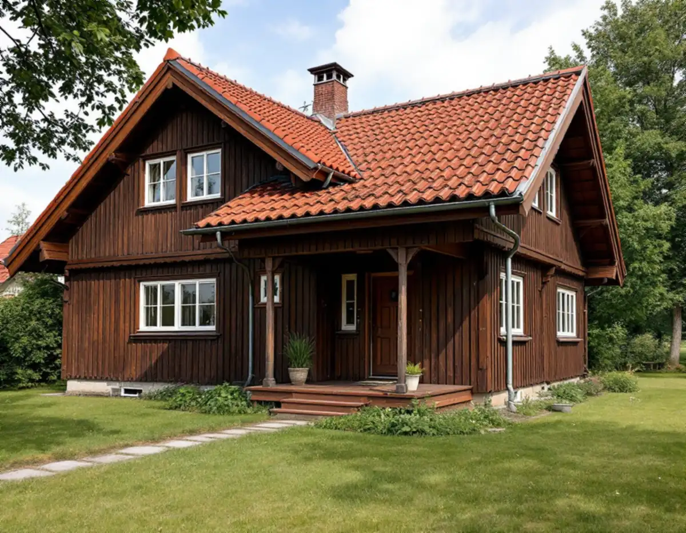
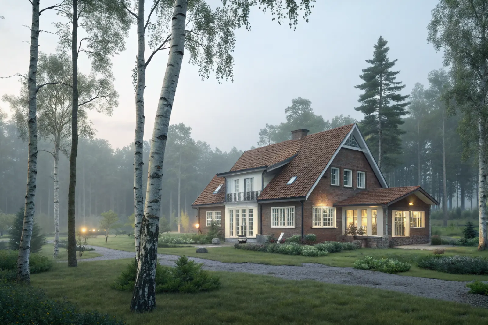
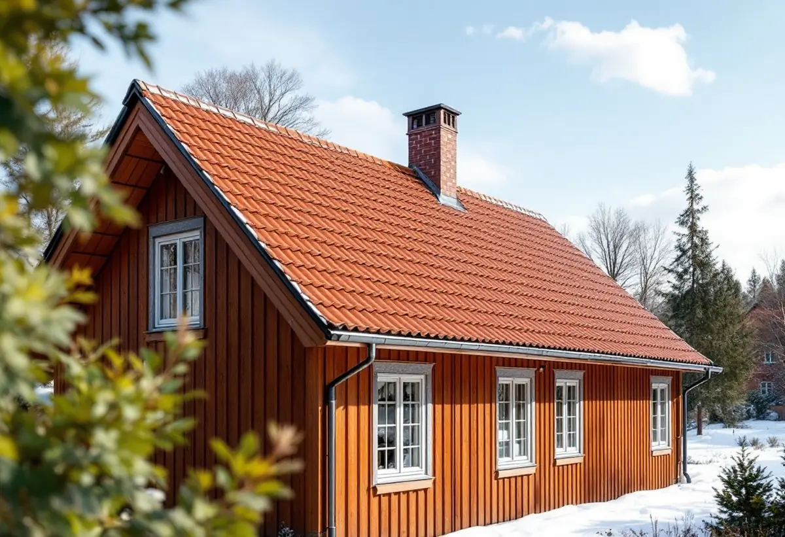

Takbyte i Spånga
Byte av tegel-, betong- och plåttak.
Takbyte i Spånga →
Spånga och Tensta–Spånga är ett stort villaområde i nordvästra Stockholm.
Skicka gärna en bild på taket.
Något blev fel. Kontrollera uppgifterna eller ring 08 12 410 276.
Vi tittar på jobbet på plats innan du får offert.
Du ser vad som ingår och vad det kostar.
Vi drar av ROT direkt och sköter ansökan.
Geal Entreprenad AB, Bromma. Org.nr 559303-7566.
Vi hjälper villaägare i Spånga, Bromsten och Solhem med takbyte, takrenovering och takbesiktning.
Spånga i nordvästra Stockholm är ett stort och blandat villaområde som omfattar bland annat Bromsten, Solhem, Sundby och Flysta. Bebyggelsen spänner från äldre trävillor till 1960- och 70-talshus, och många av taken från efterkrigstiden är nu mogna för omläggning eller byte.
I Solhem och Flysta ser vi ofta betongpannor från 60–70-talet som börjat vittra, tillsammans med underlagspapp som passerat sin livslängd. I sådana projekt byter vi gärna hängrännor, stuprör och taksäkerhet i samma omgång för ett komplett resultat.
Spånga ligger nära vår bas i Bromma, vilket gör det enkelt för oss att komma ut på besiktning och hålla tempo i projekten. Vi anpassar alltid åtgärderna efter husets ålder och det aktuella takets skick.
Oavsett om du behöver ett komplett takbyte eller en riktad renovering ger vi en tydlig bedömning och offert. Vi arbetar även i grannområden – se alla områden vi arbetar i.


Bromsten och Solhem byggdes till stor del ut under 1900-talets första hälft och har många äldre trävillor med tegel- eller betongtak. I Sundby och Flysta dominerar villor från 1950–70-talet med betongpannor, där pannornas yta har vittrat och underlagspappen är i slutet av sin livslängd.
Typiska problem är porösa betongpannor som suger vatten, mossa på norrsidan och läckage vid skorstenar och ventilationshuvar. Många hus har också fått tilläggsisolering på vinden, vilket kan göra taket kallare och mer känsligt för fukt om ventilationen vid takfoten inte fungerar.
Spångas villatomter är oftast rymliga, vilket gör det enkelt att ställa ställning och container. Det håller nere kostnaden för etablering jämfört med tätare områden.
Vid takbyte på ett 60–70-talshus passar det bra att samtidigt se över hängrännor, stuprör, snörasskydd och takstege. Då blir taket komplett och godkänt för sotare och framtida underhåll.
Är pannorna fortfarande hela räcker ofta en takomläggning: pannorna lyfts av, ny underlagspapp och ny läkt läggs och hela pannor läggs tillbaka. Det är en form av takrenovering som ger ett tätt tak för lång tid framåt till lägre kostnad än ett nytt tak.
Är betongpannorna porösa eller frostskadade räcker inte en omläggning – då gör vi ett takbyte. Osäker på vilket som gäller ditt hus? Läs takbyte eller takrenovering eller boka en takbesiktning.
Byte av tegel-, betong- och plåttak.
Takbyte i Spånga →Riktade åtgärder som förlänger takets liv.
Takrenovering i Spånga →Bedömning av skick inför beslut.
Takbesiktning i Spånga →Nytt ytskydd på plåttak.
Takmålning i Spånga →Skonsam tvätt och mossbehandling.
Taktvätt i Spånga →Nytt plåttak och plåtarbeten.
Plåttak i Spånga →Vi utgår från Bromma och når Spånga snabbt. Det gör att vi kan komma ut på besiktning utan långa väntetider och hålla nära kontakt genom hela projektet.
Läs mer om tak på villa eller jämför takbyte och takrenovering innan du bestämmer dig.
Vi arbetar även i Bromma.
Takläggare i Bromma →Vi arbetar även i Järfälla.
Takläggare i Järfälla →Vi arbetar även i Sundbyberg.
Takläggare i Sundbyberg →Vi arbetar även i Sollentuna.
Takläggare i Sollentuna →Vi arbetar även i Hässelby.
Takläggare i Hässelby →Vi arbetar även i Kista.
Takläggare i Kista →Eller ring 08 12 410 276, mån–fre 08–17.
Skicka gärna en bild på taket.
Något blev fel. Kontrollera uppgifterna eller ring 08 12 410 276.